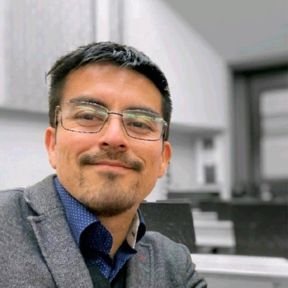
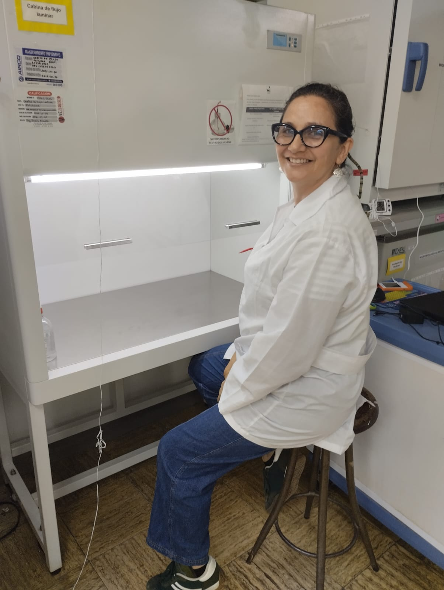
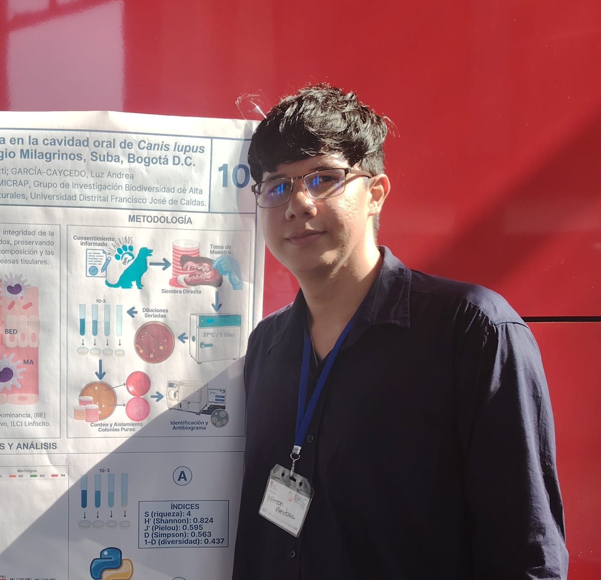
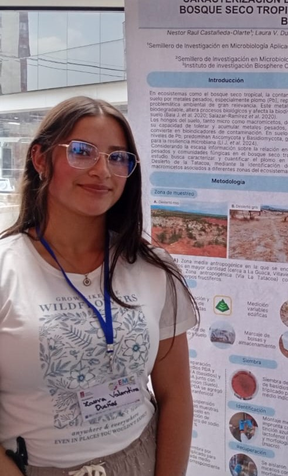

Comité Organizador

Ph. D. Tito David Peña Montenegro
Embajador · American Society for Microbiology

Ph. D. Cuauhtemoc Licona Cassani
Docente · Universidad UNAM
Ph. D. Luz Ángela Gonzalez Salazar
Docente · Universidad del Valle

M. Sc. Paola Andrea Asprilla Carabali
Universidad de Cambridge

Ph. D. Julián Alonso Rojas Barreto
Docente · Universidad Santiago de Cali

Dr. Andrés Castillo
Docente · Universidad del Valle

Ph. D. Nohra Rodríguez Castillo
Docente · Universidad del Valle

B. Sc. Valentina Estrada Martínez
Egresada · Universidad del Valle
Podcast · Entre Tubos

M. Sc. Luz Andrea García Caycedo
Docente · Universidad Distrital Francisco José de Caldas
Directora del Semillero MICRAP

Yeferson Exti Mendoza Guancha
Estudiante · Universidad Distrital Francisco José de Caldas
Líder del Semillero MICRAP

Néstor Raul Castañeda Olarte
Estudiante · Universidad Distrital Francisco José de Caldas
Integrante del Semillero MICRAP

B. Sc. Andrés Felipe Guerra Rodríguez
Egresado · Universidad Distrital Francisco José de Caldas
Decanatura FCMN

Germán David Villamizar Acuña
Estudiante · Universidad Distrital Francisco José de Caldas
Decanatura FCMN
Comité Logístico

Laura Valentina Dueñas Torres
Estudiante · Universidad Distrital Francisco José de Caldas
Integrante del Semillero MICRAP

Andrés Santiago Romero Arévalo
Estudiante · Universidad Distrital Francisco José de Caldas
Integrante del Semillero MICRAP

Santiago Bonilla Venegas
Estudiante · Universidad Distrital Francisco José de Caldas
Integrante del Semillero MICRAP